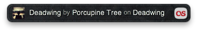
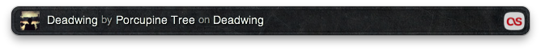

Keep an eye on what's playing in last.fm, even when you're not looking. SkronkFM stays out of your way, but is always there when you need it.
It doesn't matter if you're playing music on your Mac, on your phone, on a media center in the next room, or even across town. As long as your music player can update last.fm, your currently playing track will show up on your desktop.
- Keep track of what's currently playing on your last.fm account
- Convenient menubar access
- Always on Top so SkronkFM doesn't get lost on your desktop
- Autosizes to fit track length
- Choose between opaque or transparent background
- Shows album art if available.
- Configurable global keyboard shortcut to show/hide
- Quick link to open the current song in your default browser
Getting Started:
The first time you start up SkronkFM, it will ask you to enter a last.fm account name to watch. Since we're just looking at public last.fm info and not updating anything, you don't need to authenticate with last.fm.
Enter your last.fm user name in the Preferences window and hit the return key. The entry field should already be selected for you. If you're not sure you have the correct user account name, you can click the last.fm icon beside the entry field and that user's last.fm page should open in your default browser.
You can take this opportunity to experiment with SkronkFM's settings, or close the Preferences window and get right into it.
Watching Your Music:
SkronkFM should immediately load your current or most recent last.fm track. The last.fm icon at the right will flash each time SkronkFM updates its status from last.fm.
If you're not listening to last.fm right now, SkronkFM will load your most recently played track, but gray it out to make it clear that it doesn't see music playing.
Turn on Transparent Background in Preferences if you want to see through to the desktop or other windows behind SkronkFM.
By default, SkronkFM keeps a constant width, and will truncate longer song titles. Turn on Autosize To Fit to shrink and expand to perfectly fit the title size.
If last.fm doesn't have album info for a given track, it will show a placeholder image for the album art. See the FAQ for why this might happen.
If you don't feel like opening up the Preferences window every time you need to make a change, you can set most of the same options from the optional SkronkFM menu bar.

Have fun watching your music! If you have any questions or find any bugs, please send us an email at skronk@fourfringe.com.
FAQ:
I'm listening to music but SkronkFM is not updating. How often does SkronkFM check my last.fm playing status?
Every fifteen seconds. Checking it more often typically won't result in faster updates, since many of the music services like Mog and Rdio don't scrobble songs until they've been playing for a certain length, for example 25% completed. Commonly this translates into 30-60 seconds into a song before last.fm first sees the new song. For longer songs it may take even more time to scrobble.
Why does it take each service (Spotify, Mog) so long to update my playing status?
See previous answer. Different music services have different rules on how often they send last.fm updates. Some scrobbling applications may allow you to customize their scrobbling rules.
Why does SkronkFM keep saying my music has stopped?
SkronkFM can only report what last.fm tells it. If a scrobbling application or service does not send an update to last.fm after restarting a paused song, last.fm will not be able to see that the song is playing again. When the next song begins, last.fm should get a fresh update.
Where's my album? Where's my album art?
If last.fm doesn't recognize the song you're scrobbling, it won't be able to associate it with an album. Sometimes small differences in the song name will throw things off, like missing punctuation or alternate spellings. When in doubt, look it up on last.fm by selecting "Open Song on last.fm" from the SkronkFM menu.
That flashing icon is distracting. How do I get rid of it?
Turn off the option "Show Music Source" in Preferences or in the menu bar menu.
Does SkronkFM update in the background?
SkronkFM only checks the network when it's showing. If you hide it, SkronkFM will cease network activity until you show it again.
Scrobble?
"Scrobble" is last.fm's term for sending song updates from your local playlist to last.fm.
What if I don't have a question?
Feel free to ask it anyway. Send all your non-questions to skronk@fourfringe.com.

Here are some ideas that we're working on for upcoming releases of SkronkFM. We can't guarantee when these new features will be ready, but they should give you a picture of where we're headed.
- More song info
- Detect current track directly from local music players
- Growl support
- iCloud syncing
- Song history